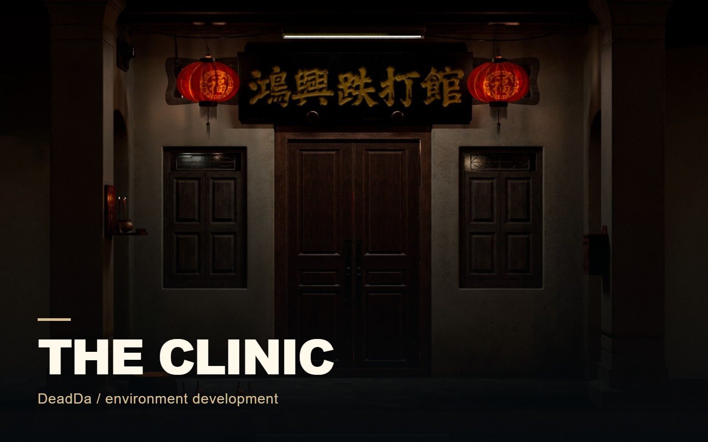

Environments
Shopfront / Environment Study
A setting told through its details.

THE PROJECT
An exterior shopfront developed from architectural blockout to set dressing and a finished lighting treatment.
- MY CONTRIBUTION / FOCUS
- Environment development
Selected environment-development views from the supplied archive.
PROCESS & DESIGN
From architectural massing to a lived-in entrance.
The blockout establishes the building proportions. The isolated look-development view clarifies materials, while the set-dressed presentation adds signage, doors, and light.
Structure
The neutral blockout establishes the entrance, side openings, and roof before the surface pass.
Scene dressing
Signs, lanterns, doors, and warm light give the same architecture a more specific setting.
01 / Shopfront / Environment Study
Architecture & look development
Compare the neutral architectural blockout with the isolated material presentation.
02 / Shopfront / Environment Study
Set dressing
The cabinet and prop arrangement adds interior context; signs and lanterns define the finished entrance.